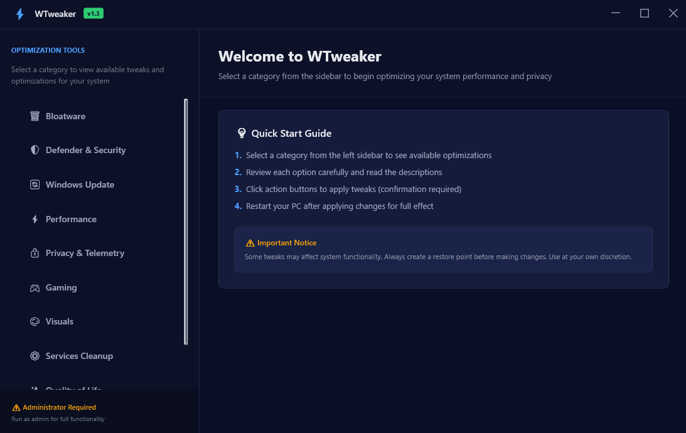
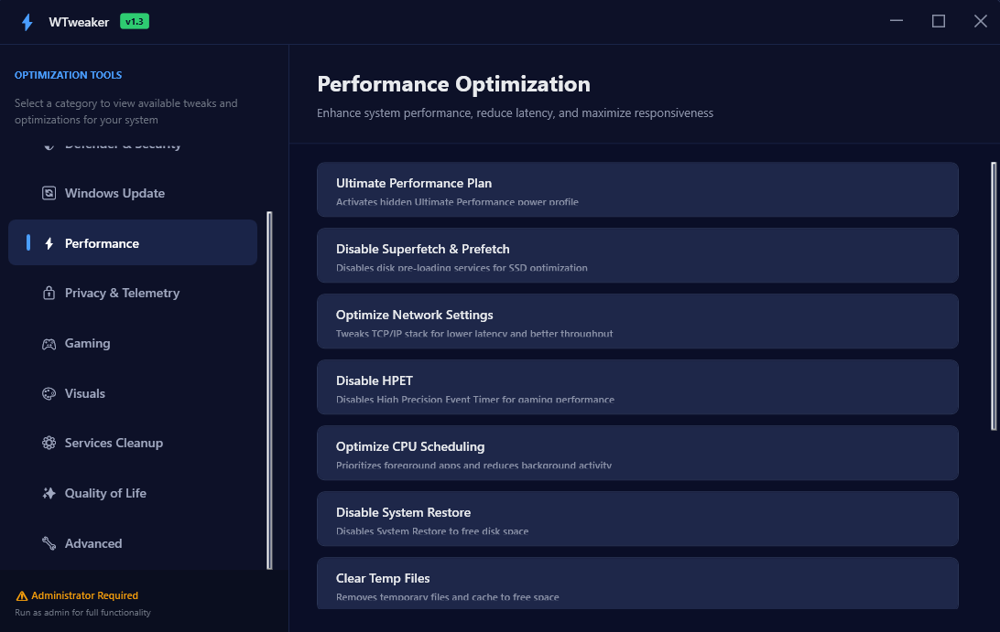
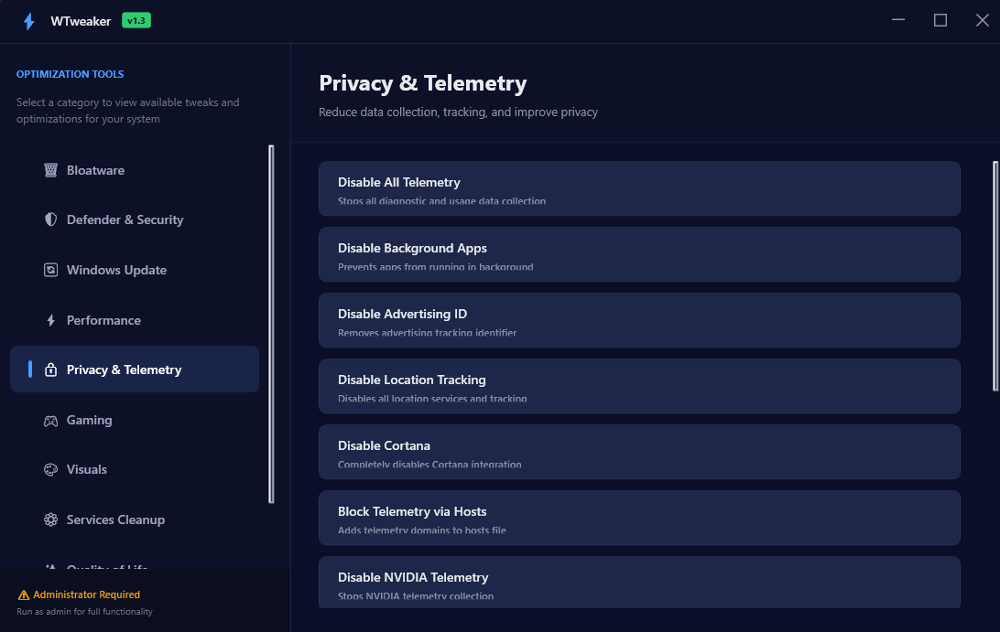

Features
Discover the powerful capabilities of our optimization tools
Performance Tweaks
Optimize system settings for maximum performance and responsiveness.
Privacy Protection
Disable telemetry and data collection features to protect your privacy.
Bloatware Removal
Remove unnecessary pre-installed apps and Windows features.
Customization
Customize Windows appearance and behavior to your preferences.
Backup & Restore
Create backups of your system settings before making changes.
Advanced Tweaks
Access advanced system settings not available in the standard UI.
WTweaker in Action
See how WTweaker helps you optimize and customize Windows with ease

Main dashboard — quick access to tweaks, privacy, and cleanup tools.

Performance tweaks tab — disable unnecessary services and boost responsiveness.

Privacy control — manage telemetry and data collection with one click.
Ready to Experience These Features?
Download our optimization tools today and unleash the full potential of your Windows system.
Download Now